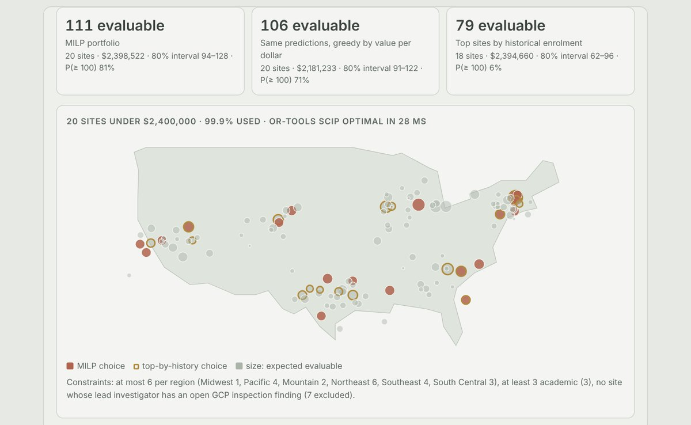
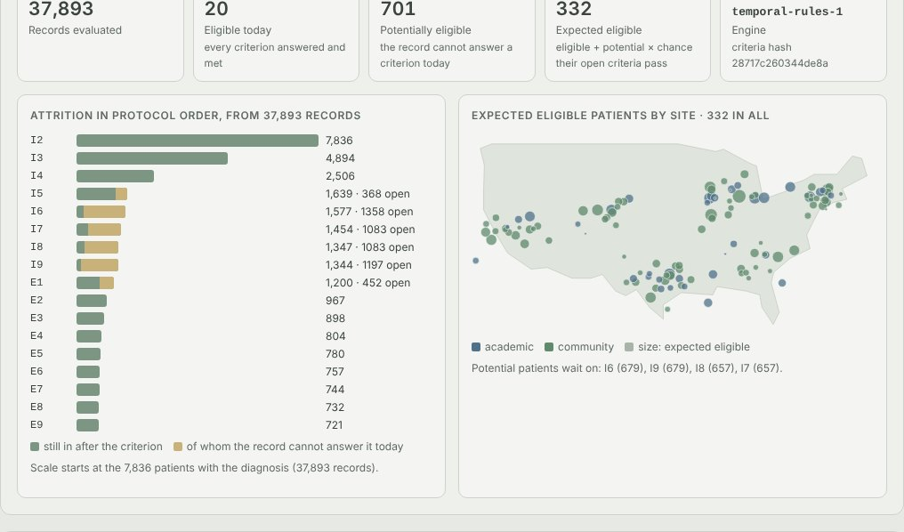
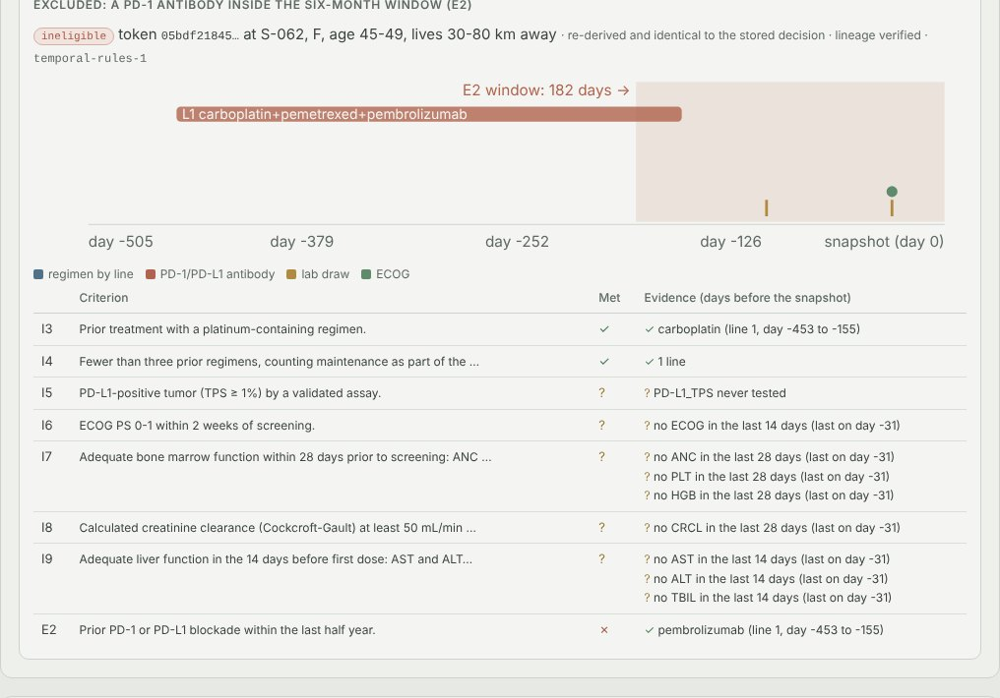
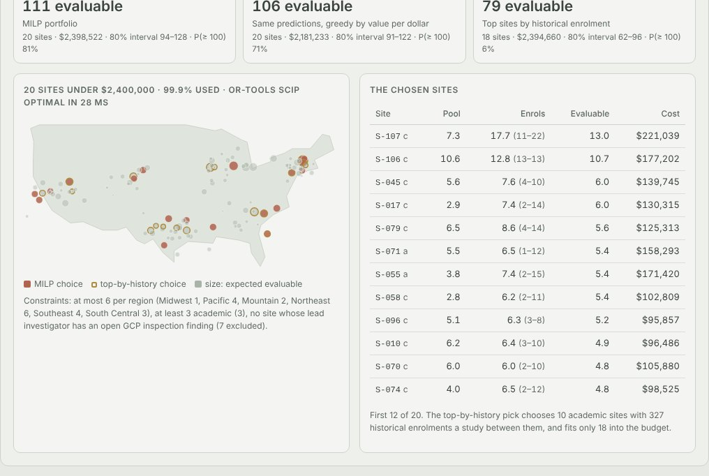
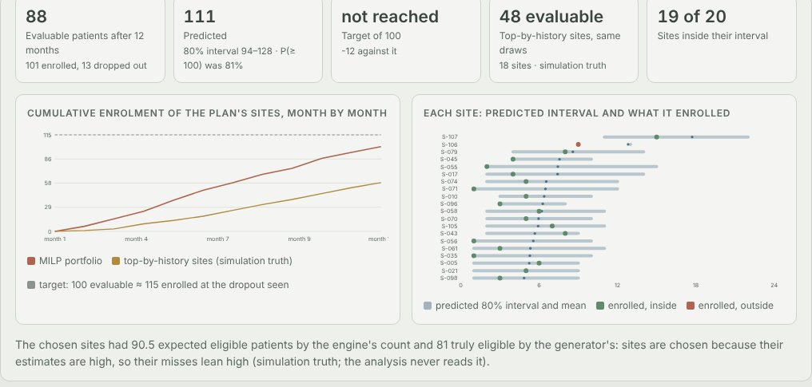

Python · Temporal rules engine · Mixed-integer programming · 2026-10
Which 20 Sites Will Actually Enrol This Trial?
Trial feasibility for an invented 120-site oncology network: a deterministic grammar turns a 22-criterion protocol into rules a study director reviews, a temporal rules engine finds 20 eligible and 701 potentially eligible patients in 37,893 de-identified records, and a MILP picks 20 sites under $2.4M that enrolled 88 evaluable patients in a simulated year, short of their 94–128 forecast, where the top sites by history got 48.

Built from a written blueprint as one vertical slice. The network is simulated: sites, investigators, patients, protocols and enrolment come from a generator in the repository, which knows each patient's real state today and each site's real enrolment rate, and that is what lets every translation, eligibility decision, forecast and portfolio be checked against the truth. No real patient, site or investigator data is used, and no language model or outside service is called. Not built: a language-model parser (the grammar abstains instead), FHIR ingestion, real publication data, Kafka, Kubernetes, single sign-on.
01 — The problem
A sponsor picking sites for a cancer trial usually picks the ones that enrolled well before, and a large share of sites then enrol one patient or none, because the question that matters is how many patients at that site meet this protocol's 22 criteria today. Answering it means turning prose like "no PD-1 or PD-L1 blockade within the last half year" into rules a computer can run, running them against patient records that are full of gaps and must not identify anyone, and then choosing sites under a budget. Can software translate the criteria without inventing anything, find the patients who qualify or nearly qualify, forecast each site's enrolment honestly, pick a portfolio a second person signs off, and show afterwards how far the forecast was off?
Blueprint 8 of twenty in a fourth build book, built as its demo scenario end to end.
02 — What I built
A Python service on PostgreSQL with a background worker and a web page, started by one docker compose up.
- A simulated research network: 120 sites, 263 investigators, five years of site history and 37,893 patient records with dated diagnoses, biomarkers, labs, regimens by line, ECOG and comorbidities, tokenised at the door so no name, MRN, birth date, date of care or free text is ever stored.
- A criteria parser: a deterministic grammar into a typed rules language, with validation, and a review queue for anything it cannot account for word by word; a study director reviews every criterion before it runs.
- A temporal rules engine that answers each criterion as met, not met or unanswerable today, and explains every decision with its evidence.
- Site enrolment and dropout models with intervals, and investigator profiles with an inspection policy.
- A budgeted 20-site portfolio by mixed-integer programming, approved by a second person, then twelve simulated months to check it.
03 — How it was built
- 01
Records that cannot identify anyone
Each site's feed arrives as a hospital would send it: MRN, birth date, dated events, a free-text note. At the door it becomes a token: a keyed hash of the MRN, a five-year age band, a distance band, and every event as days before the snapshot, with labs in one unit. Of 787,524 events in the demo, 788 were refused with a reason (a blinded study drug no dictionary can classify, a haemoglobin in mmol/L). A test checks every MRN and birth date the feeds sent against the stored tokens, the explanations and the analytics export, which also suppresses cells under 11.
token = hashlib.sha256(f"{salt}:{record['mrn']}".encode()).hexdigest()[:20] return {"token": token, "site": record["site"], "sex": record["sex"], "age_band": age_band(age), "distance_band": distance_band(float(record.get("home_distance_km") or 0)), "events": events}, problems - 02
A parser that would rather ask than guess
The blueprint asks for a language model that writes the rules. This one is a grammar: labs with comparator, number, unit and window; stage lists; biomarkers; lines of therapy; drug classes with windows. Every word of a criterion must be explained by a clause or be protocol boilerplate, or the criterion goes to review. On 240 generated protocols in the wording it was written against it translated 97.7% exactly and none wrongly; on 240 in wording written separately it translated 9% and sent the rest to review, still with none wrong. A keyword spotter got 42% and 26%.
rest = [w for w in re.findall(r"[a-z0-9.+\-/^]+", ...) if w not in FILLER] if rest: reasons.append("unexplained words: " + " ".join(rest[:8])) - 03
A person approves every criterion
In the demo, 16 of 22 criteria became rules, 4 were left to the site (consent, life expectancy) and 2 went to review. The study director's first edit typed the neutrophil threshold as 1,500 in 10^9/L and was refused by the same validation the parser's output passes. The two queued criteria were written by hand and the other 20 accepted; only then were the criteria frozen and allowed to run on patients, and their hash is stamped on every decision.
p.append(f"lab: {n} threshold {rule.get('value')} outside the plausible range {lo}-{hi} {world.LABS[n][0]} (a unit slip?)") - 04
Eligibility that reads time
A lab counts only inside its window, a regimen only if it ended inside the exclusion window, an untested biomarker is unknown. Most patients off treatment have no recent labs, so the engine keeps a third answer, potentially eligible, says what each one waits on, and counts them by how often patients whose record does answer pass that criterion. On held-out protocols the engine found 98–100% of the truly eligible patients; the same rules without time found none, because "no systemic therapy within 28 days" becomes "ever".
inside = [e for e in series if e["day"] >= -w] if temporal else series if not inside: return None, {"why": f"no {rule['name']} in the last {w} days" + ...} - 05
Forecasts with honest intervals
Each site's enrolment is a negative-binomial rate per eligible patient-month, learned from its own history with studies that filled their slots treated as censored, times the months a Weibull model expects the site to be open. The pool, the site's frailty and the coefficients are all drawn, 2,000 times. Per site it was off by 1.06–2.19 patients against 5.18–8.63 for the historical average, which knows nothing about this protocol's patients.
theta = rng.gamma(a, 1 / b, draws) n = np.minimum(rng.poisson(theta * rates * pools * open_months), site["capacity"]) - 06
A portfolio under budget, signed by someone else
The MILP picks exactly 20 sites to maximise expected evaluable patients under the budget, at most 6 a region, at least 3 academic, and none whose lead investigator has an open inspection finding. In the demo it chose 20 sites for $2,398,522 of $2,400,000; the top sites by history fit only 18. The analyst cannot approve it; the study director does, and a director cannot approve a plan of their own.
if pl["proposed_by"] == ctx.actor_id: raise Problem(403, "proposer_cannot_approve", "a site portfolio needs a second person")
04 — Results
The demo. The funnel and the expected eligible patients by site, from 37,893 records:

A patient excluded by a PD-1 antibody inside the six-month window, with the evidence:

The portfolio against its baselines:

Twelve simulated months:

On three held-out networks (four protocols each):
| System | Baseline | |
|---|---|---|
| Criteria translated exactly, familiar wording | 97.7%, 0 wrong | 42.0% keyword spotter |
| … wording never shown to the grammar | 9.0%, 0 wrong | 26.3% |
| Truly eligible patients found | 98–100% | 0–32% without time |
| Site enrolment error, patients per site | 1.06–2.19 | 5.18–8.63 historical average |
| Dropout risk, Brier score | 0.165–0.173 | 0.173–0.181 base rate |
| Evaluable patients, 12 portfolios of 20 sites | 1,286 | 1,012 top by history |
| Optimisation for 1,000 candidate sites | 2.7 s | bar: 2 minutes |
Honest limits. The parser's zero errors come from abstaining: on wording it was not written against it translates one criterion in eleven, and a reviewer writes the rest. The gain over the historical baseline is the prediction; on the same predictions the MILP is no better than a greedy pick by value per dollar (1,286 against 1,268) and earns its place by keeping the regional and academic rules. Portfolio forecasts are over-confident: the totals landed inside their 80% interval 7 times in 12, and the demo's plan delivered 88 against a forecast of 111 (94–128), because the optimiser picks the sites whose pool estimates came out high. The dropout model ranks only moderately (AUC 0.62–0.65). Everything is scored against the simulator, which is the best case.
Checks. 13 tests, including: no MRN, birth date or date of care survives tokenisation, and none appears in the stored tokens, explanations or exports; the grammar is never confidently wrong across 96 generated protocols and sends ambiguous phrasings to review; validation catches a unit slip; the engine treats time and missing data as specified and finds over 90% of truly eligible patients; the enrolment and dropout models beat their baselines on later studies; the MILP matches brute force on small instances; a criteria set cannot run before review; a proposer cannot approve; one sponsor cannot see another's patients. The Docker stack was run end to end.
05 — What I'd do next
- A language model as one more proposer of rules, checked by the same validation and review, to lift coverage on unfamiliar wording without trusting it.
- Shrinking each site's pool estimate toward what similar sites show, so the optimiser stops favouring sites whose estimates are high by chance.
- FHIR ingestion from real EHR extracts and site start-up data, where the activation model would meet real contracting delays.